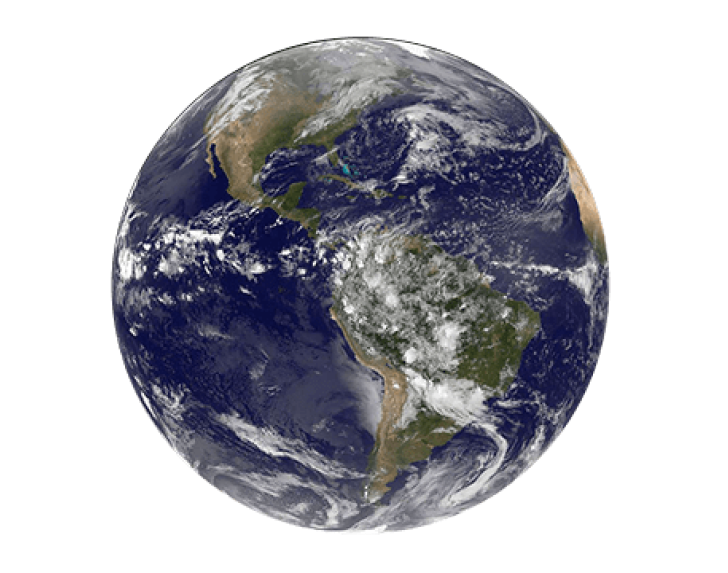
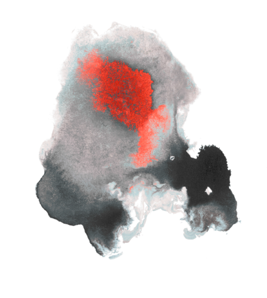
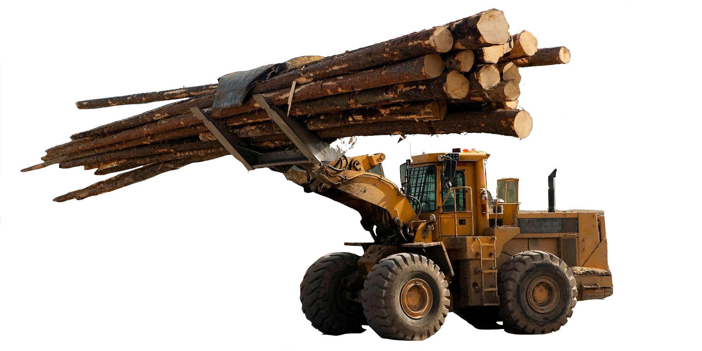

Our Climate

Climate change refers to long-term shifts in temperatures and weather patterns. These shifts may be natural, such as through variations in the solar cycle. But since the 1800s, human activities have been the main driver of climate change, primarily due to burning fossil fuels like coal, oil and gas.
 Generating electricity and heat by burning fossil fuels causes a large chunk of global emissions. Most electricity is still generated by burning coal, oil, or gas, which produces carbon dioxide and nitrous oxide – powerful greenhouse gases that blanket the Earth and trap the sun’s heat. Globally, a bit more than a quarter of electricity comes from wind, solar and other renewable sources which, as opposed to fossil fuels, emit little to no greenhouse gases or pollutants into the air.
Manufacturing and industry produce emissions, mostly from burning fossil fuels to produce energy for making things like cement, iron, steel, electronics, plastics, clothes, and other goods. Mining and other industrial processes also release gases, as does the construction industry. Machines used in the manufacturing process often run on coal, oil, or gas; and some materials, like plastics, are made from chemicals sourced from fossil fuels. The manufacturing industry is one of the largest contributors to greenhouse gas emissions worldwide.
Cutting down forests to create farms or pastures, or for other reasons, causes emissions, since trees, when they are cut, release the carbon they have been storing. Each year approximately 12 million hectares of forest are destroyed. Since forests absorb carbon dioxide, destroying them also limits nature’s ability to keep emissions out of the atmosphere. Deforestation, together with agriculture and other land use changes, is responsible for roughly a quarter of global greenhouse gas emissions.
Most cars, trucks, ships, and planes run on fossil fuels. That makes transportation a major contributor of greenhouse gases, especially carbon-dioxide emissions. Road vehicles account for the largest part, due to the combustion of petroleum-based products, like gasoline, in internal combustion engines. But emissions from ships and planes continue to grow. Transport accounts for nearly one quarter of global energy-related carbon-dioxide emissions. And trends point to a significant increase in energy use for transport over the coming years.
Producing food causes emissions of carbon dioxide, methane, and other greenhouse gases in various ways, including through deforestation and clearing of land for agriculture and grazing, digestion by cows and sheep, the production and use of fertilizers and manure for growing crops, and the use of energy to run farm equipment or fishing boats, usually with fossil fuels. All this makes food production a major contributor to climate change. And greenhouse gas emissions also come from packaging and distributing food.
Globally, residential and commercial buildings consume over half of all electricity. As they continue to draw on coal, oil, and natural gas for heating and cooling, they emit significant quantities of greenhouse gas emissions. Growing energy demand for heating and cooling, with rising air-conditioner ownership, as well as increased electricity consumption for lighting, appliances, and connected devices, has contributed to a rise in energy-related carbon-dioxide emissions from buildings in recent years.
To preserve a livable climate, greenhouse-gas emissions must be reduced to net zero by 2050. Bold, fast, and wide-ranging action needs to be taken by governments and businesses. But the transition to a low-carbon world also requires the participation of citizens – especially in advanced economies. The United Nations released a campaign for individual action towards limiting the harmful effects stated above.
Click here to find out about Act NowInformation presented above quoted The United Nations' Climate Action findings.
Click here to discover more about the topic